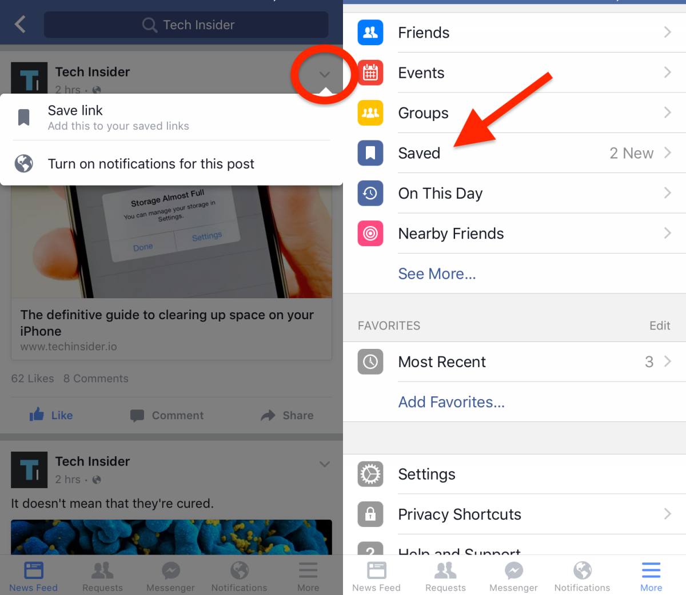
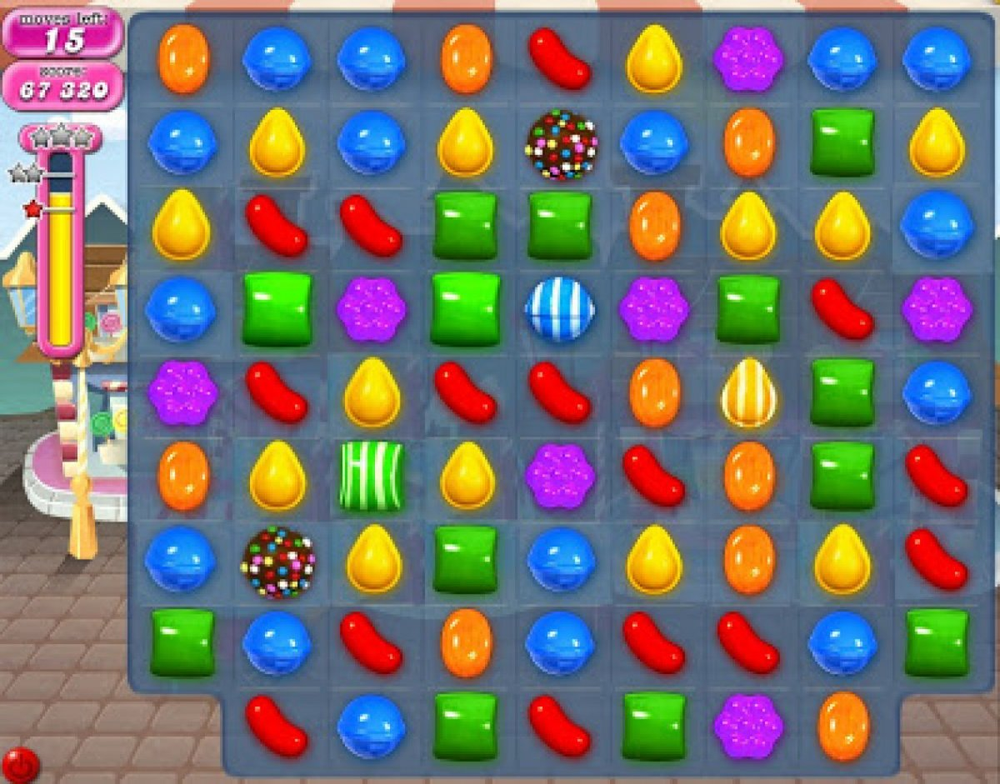

Facebook Tips & Tricks
1. See something interesting in your News Feed but don't have time to look at it now? You can save it for later.

Your bookmarked links, videos, photos, places and more are accessible from the "Saved" page on your Facebook profile. The page is included under the "More" tab in the Facebook mobile app.
Perfect for saving all of Tech Insider's amazing articles for later.
2. Never get a request to play Candy Crush again.

There's a way to keep annoying Facebook games like Candy Crush from spamming you with invites.
Under the "More" tab in Facebook's mobile app, select "Settings" then "Account Settings" followed by "Notifications." Go to "Mobile," scroll all the way down, and un-check "Application Invites."
3. Turn your profile pic into an animated GIF.

From the Facebook mobile app, select your profile picture and then "Take a New Profile Video" to upload a short video loop of yourself. The result looks like a mix between an animated GIF and a moving picture frame straight out of Harry Potter.
4. Stay on top of the hottest news with what's trending on Facebook.
The topics that are currently being talked about the most on Facebook are featured on the Trending list, which is accessible to the right of the News Feed on the desktop and under the search bar in Facebook's mobile app.
5. Turn off auto-playing videos in your News Feed.
If you don't want videos on Facebook automatically playing in your News Feed, make sure to turn the setting off.
Under the "More" tab in the Facebook mobile app, select "Videos and Photos." You can choose to auto play videos over cellular and WiFi connections, just WiFi, or never.
6. Your Activity Log shows everything you've liked, shared, and commented on in the past.
If you don't want videos on Facebook automatically playing in your News Feed, make sure to turn the setting off.
Under the "More" tab in the Facebook mobile app, select "Videos and Photos." You can choose to auto play videos over cellular and WiFi connections, just WiFi, or never.
7. How to recover Deleted Facebook Messages
This trick may be secret for you. If unfortunately if lost your messages and you’re searching to get back these messages again in your inbox, then this trick will be best for you. As I wanna tell you that Facebook our all information saving in archive,
And Facebook also allows downloading your archive to your computer, Using that we can we can explore our all deleted Facebook message and all conversation back.Let me show complete method about this.
First, you need to go Setting Tab.
Now click on General Tab you will See Download a copy of your data.
Just click on Download a copy option.
You will redirect new Page, just click om Start my Archive.

Next step will need you account password just feel it.
Then all conversation report with downloading will send you on Email.

Just download the archive and watch all data of your account.